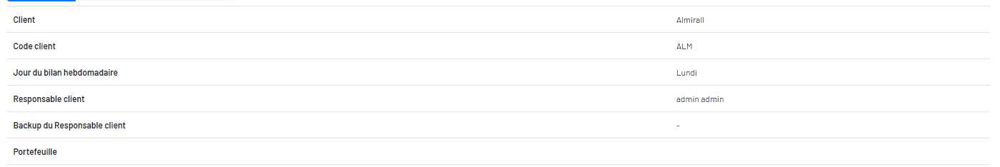
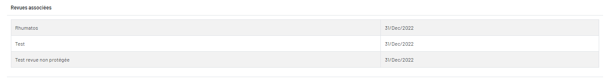
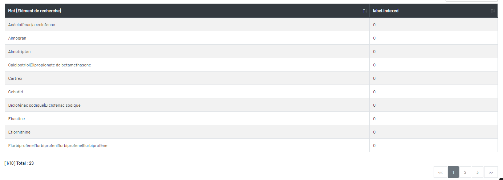

Détail du Client
Le page « Détail du client » se trouve l’information du client et ses mots-clés.
Il y a trois onglets : « détail du client », « Revues associées » et « Portefeuille »
Le bloc « détail du client»

Le bloc « Revues associées »

Le bloc « Portefeuille »
